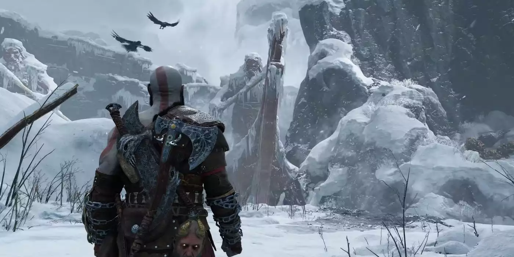

About Kratos
I am Kratos, the God of War, a relentless force whose past is etched in the blood of gods and titans alike. From the ashes of Sparta, I emerged, fueled by vengeance and a burning desire to break free from the chains of fate. My journey has taken me through realms, battling mythical beasts, and toppling deities. I am a Spartan warrior, a slayer of gods, a father haunted by the sins of my past. My blades, the Chains of Olympus, carry the weight of my wrath, and my quest for redemption knows no bounds. In a world steeped in chaos and betrayal, I stand as a symbol of indomitable strength, a ghost of Sparta who will not be forgotten.
Teasing Odin
Krato's Achievements
- Defied the gods by scaling Mount Olympus and challenging divine authority.
- Endured the brutal loss of family, driving an unquenchable thirst for revenge and redemption.
- Single-handedly took down several powerful gods, including Ares, Poseidon, and Zeus.
- Possess an unwavering determination to overcome any obstacle, facing gods and monsters with relentless resolve.
- Ventured through various realms, including Greek, Norse, and possibly others, leaving an indelible mark on each.
Krato's Friends
Friends? Bah, gods betrayed me, mortals tremble at my name, and family... well, that's a complicated tale. Mimir, the head I carried around, was more of a talking encyclopedia than a buddy. In this harsh world of gods and monsters, alliances are fleeting, and I find myself mostly on a solitary path, carving through chaos with the Blades of Chaos. Friendship is a luxury I can ill afford in the business of war and revenge.
Krato's Weapons
The Blades of Chaos hold a special place in my heart, or what's left of it. But there's more...
- Blades of Chaos: These chained blades are an extension of my wrath, a relentless dance of chaos that carves through anything in my path.
- Leviathan Axe: A newfound companion, the Leviathan Axe is a frosty force to be reckoned with. Its throw-and-recall mechanic adds a touch of finesse to the brutal art of war.
- Spartan Aspis: In the heat of battle, a good defense is as crucial as a strong offense. The Spartan Aspis has saved me more times than I can count, deflecting blows and keeping me in the fight.